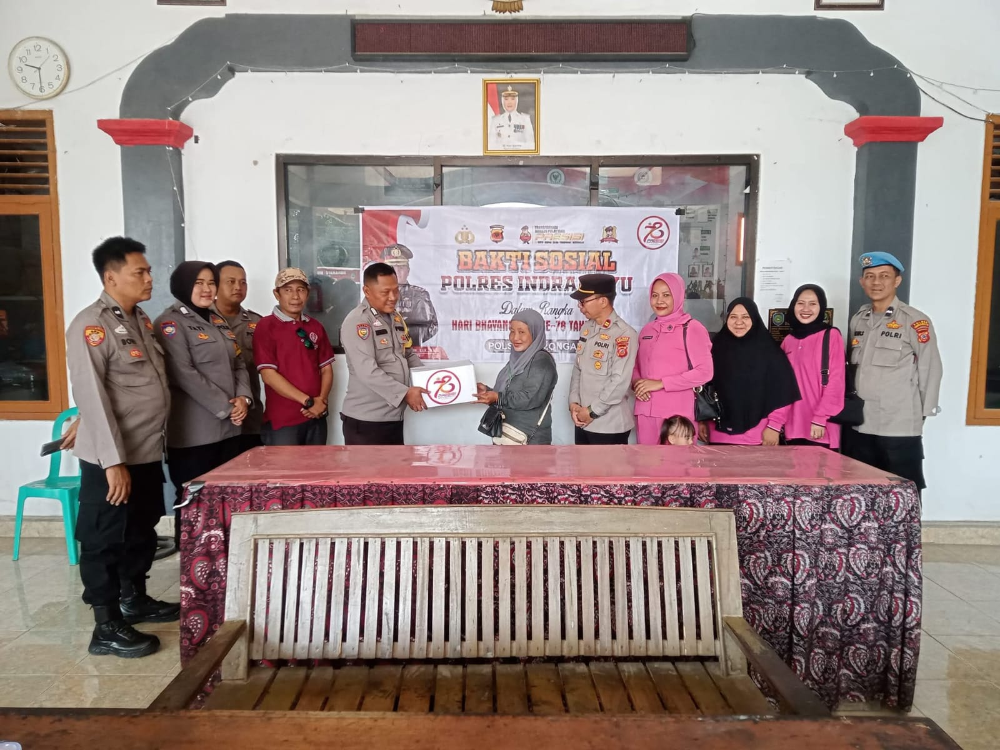
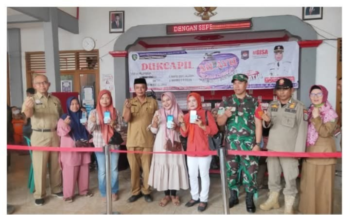
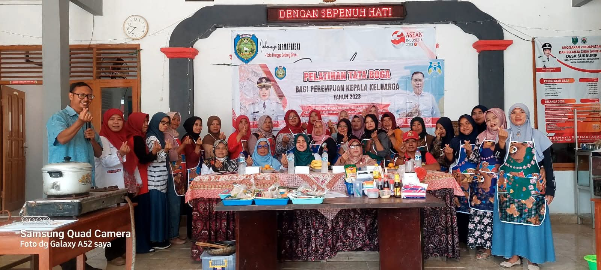
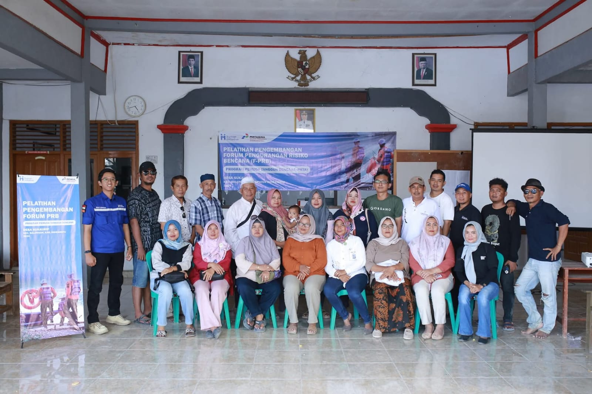
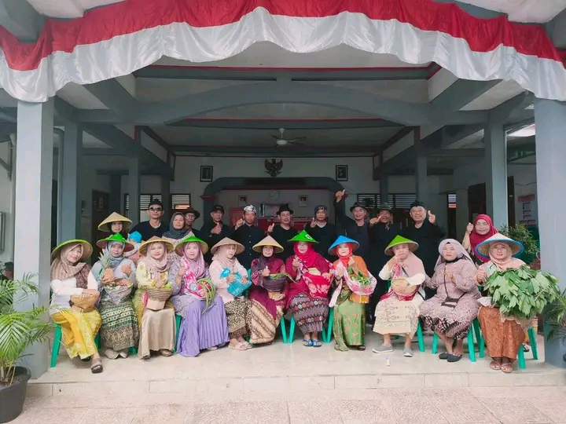
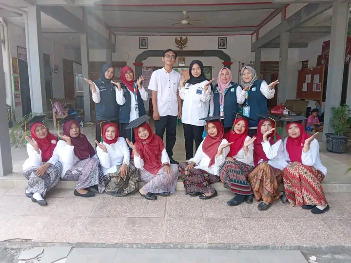
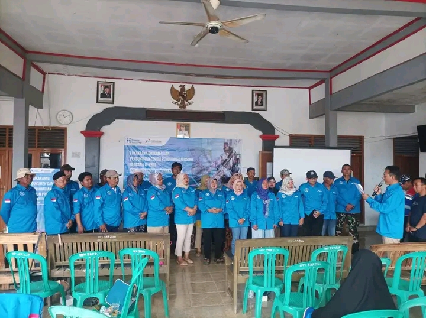
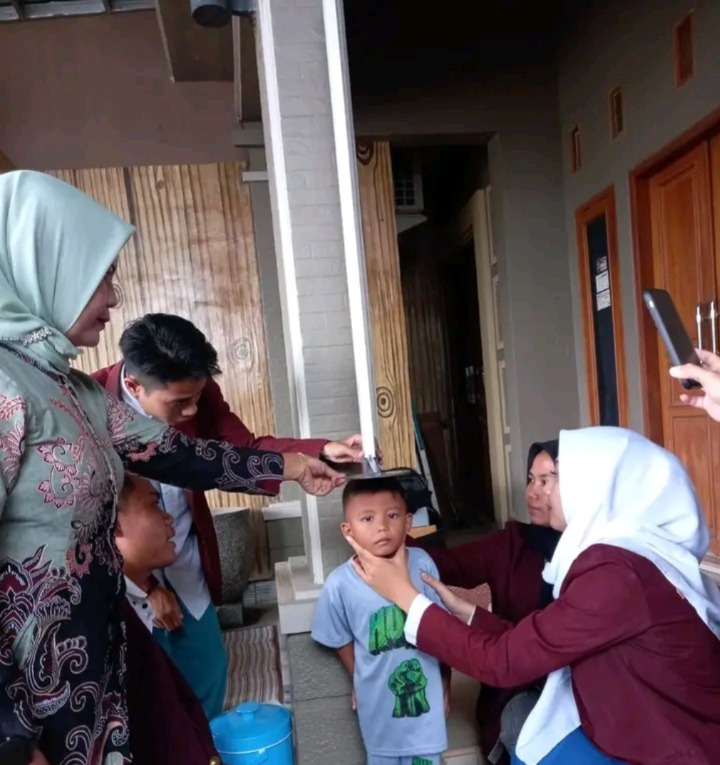
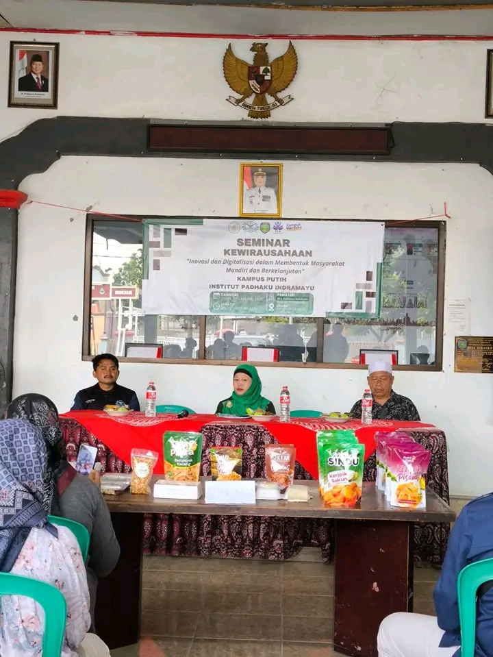
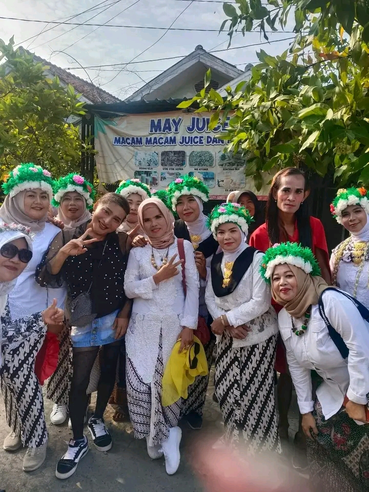

Pusat informasi resmi Pemerintah Desa Sukaurip yang menyajikan informasi desa, data desa, berita desa dan menu informasi desa.
Lihat Data Desa
Assalamu'alaikum Warahmatullahi Wabarakatuh.
Puji syukur ke hadirat Allah SWT atas segala rahmat dan karunia-Nya sehingga Website Resmi Desa Sukaurip dapat hadir sebagai sarana informasi dan komunikasi bagi masyarakat.
Website ini merupakan wujud komitmen Pemerintah Desa Sukaurip dalam meningkatkan keterbukaan informasi publik, kualitas pelayanan masyarakat, serta mendukung perkembangan teknologi informasi di tingkat desa.
Kami berharap kehadiran website ini dapat mempererat hubungan antara pemerintah desa dan masyarakat serta menjadi media yang informatif, transparan, dan bermanfaat bagi seluruh lapisan masyarakat.

Polres Indramayu menggelar bakti sosial dalam rangka Hari Bhayangkara ke-78 dengan menyalurkan bantuan kepada masyarakat Desa Sukaurip sebagai bentuk kepedulian sosial dan pengabdian Polri kepada masyarakat.

Pemerintah Desa Sukaurip bersama Disdukcapil Kabupaten Indramayu melaksanakan kegiatan pelayanan administrasi kependudukan bagi masyarakat. Kegiatan ini merupakan upaya untuk mendekatkan dan mempermudah akses pelayanan kependudukan kepada warga desa.

Dalam rangka pemberdayaan perempuan, Pemerintah Desa Sukaurip menyelenggarakan Pelatihan Tata Boga bagi Perempuan Kepala Keluarga (PEKKA). Melalui kegiatan ini, peserta mendapatkan pengetahuan dan keterampilan dalam pengolahan makanan yang dapat dikembangkan menjadi usaha produktif guna meningkatkan kesejahteraan keluarga.

Pemerintah Desa Sukaurip bersama mitra terkait mengadakan Pelatihan Pengembangan Forum Pengurangan Risiko Bencana (F-PRB) guna meningkatkan kesiapsiagaan masyarakat dalam menghadapi berbagai potensi bencana di lingkungan desa.

Masyarakat Desa Sukaurip melaksanakan tradisi Mapag Sri sebagai bentuk rasa syukur kepada Tuhan Yang Maha Esa atas keberkahan hasil pertanian serta harapan untuk panen yang melimpah di masa mendatang.

Peserta Sekolah Perempuan Capai Impian dan Cita-cita (Sekoper Cinta) Desa Sukaurip mengikuti kegiatan wisuda sebagai bentuk apresiasi atas keberhasilan menyelesaikan program pemberdayaan perempuan.

Pemerintah Desa Sukaurip melaksanakan Lokakarya Dokumen dan Pengukuhan Forum Pengurangan Risiko Bencana (F-PRB) sebagai upaya memperkuat kesiapsiagaan masyarakat dalam menghadapi berbagai potensi bencana.

Kegiatan Posyandu bersama STIKes dilaksanakan untuk memantau pertumbuhan dan perkembangan balita serta meningkatkan kesadaran masyarakat akan pentingnya kesehatan anak sejak dini.

Pemerintah Desa Sukaurip bersama Institut Padhaku Indramayu menggelar Seminar Kewirausahaan untuk meningkatkan wawasan masyarakat dalam mengembangkan usaha melalui inovasi dan pemanfaatan teknologi digital.

Masyarakat Desa Sukaurip turut memeriahkan kegiatan Kunjungan Buyut Babakan sebagai bentuk pelestarian tradisi dan penghormatan terhadap nilai-nilai budaya yang diwariskan oleh para leluhur.